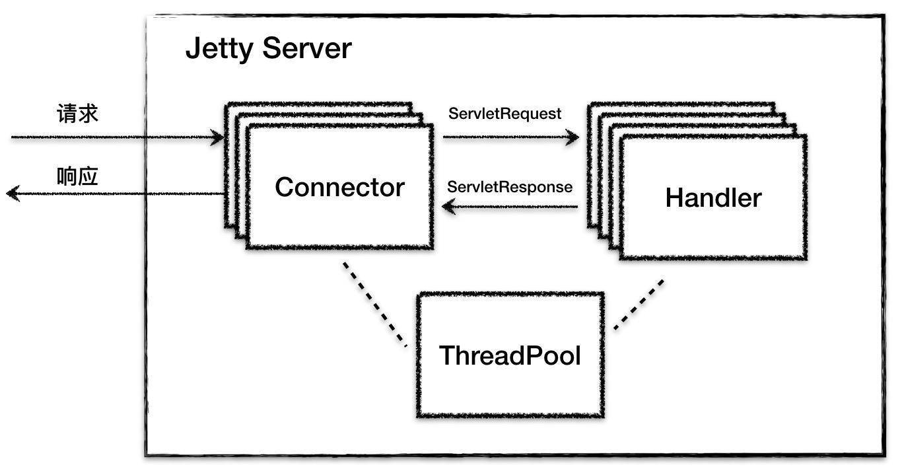
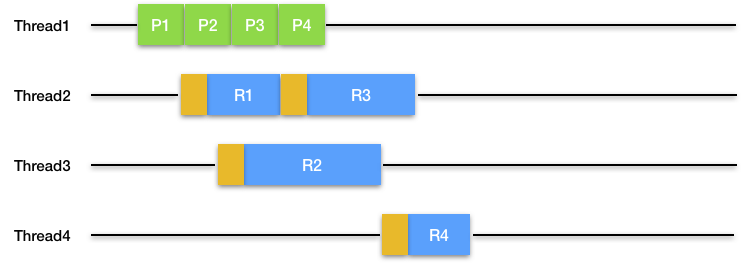
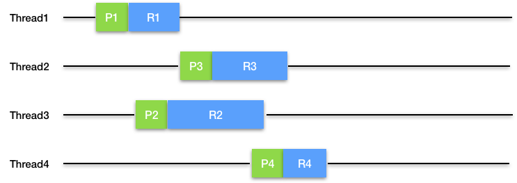

- 00 开篇词 Java程序员如何快速成长？.md
- 01 Web容器学习路径.md
- 02 HTTP协议必知必会.md
- 03 你应该知道的Servlet规范和Servlet容器.md
- 04 实战：纯手工打造和运行一个Servlet.md
- 05 Tomcat系统架构（上）： 连接器是如何设计的？.md
- 06 Tomcat系统架构（下）：聊聊多层容器的设计.md
- 07 Tomcat如何实现一键式启停？.md
- 08 Tomcat的“高层们”都负责做什么？.md
- 09 比较：Jetty架构特点之Connector组件.md
- 10 比较：Jetty架构特点之Handler组件.md
- 11 总结：从Tomcat和Jetty中提炼组件化设计规范.md
- 12 实战：优化并提高Tomcat启动速度.md
- 13 热点问题答疑（1）：如何学习源码？.md
- 14 NioEndpoint组件：Tomcat如何实现非阻塞I_O？.md
- 15 Nio2Endpoint组件：Tomcat如何实现异步I_O？.md
- 16 AprEndpoint组件：Tomcat APR提高I_O性能的秘密.md
- 17 Executor组件：Tomcat如何扩展Java线程池？.md
- 18 新特性：Tomcat如何支持WebSocket？.md
- 19 比较：Jetty的线程策略EatWhatYouKill.md
- 20 总结：Tomcat和Jetty中的对象池技术.md
- 21 总结：Tomcat和Jetty的高性能、高并发之道.md
- 22 热点问题答疑（2）：内核如何阻塞与唤醒进程？.md
- 23 Host容器：Tomcat如何实现热部署和热加载？.md
- 24 Context容器（上）：Tomcat如何打破双亲委托机制？.md
- 25 Context容器（中）：Tomcat如何隔离Web应用？.md
- 26 Context容器（下）：Tomcat如何实现Servlet规范？.md
- 27 新特性：Tomcat如何支持异步Servlet？.md
- 28 新特性：Spring Boot如何使用内嵌式的Tomcat和Jetty？.md
- 29 比较：Jetty如何实现具有上下文信息的责任链？.md
- 30 热点问题答疑（3）：Spring框架中的设计模式.md
- 31 Logger组件：Tomcat的日志框架及实战.md
- 32 Manager组件：Tomcat的Session管理机制解析.md
- 33 Cluster组件：Tomcat的集群通信原理.md
- 34 JVM GC原理及调优的基本思路.md
- 35 如何监控Tomcat的性能？.md
- 36 Tomcat I_O和线程池的并发调优.md
- 37 Tomcat内存溢出的原因分析及调优.md
- 38 Tomcat拒绝连接原因分析及网络优化.md
- 39 Tomcat进程占用CPU过高怎么办？.md
- 40 谈谈Jetty性能调优的思路.md
- 41 热点问题答疑（4）： Tomcat和Jetty有哪些不同？.md
- 特别放送 如何持续保持对学习的兴趣？.md
- 结束语 静下心来，品味经典.md
19 比较：Jetty的线程策略EatWhatYouKill
我在前面的专栏里介绍了Jetty的总体架构设计，简单回顾一下，Jetty总体上是由一系列Connector、一系列Handler和一个ThreadPool组成，它们的关系如下图所示：

相比较Tomcat的连接器，Jetty的Connector在设计上有自己的特点。Jetty的Connector支持NIO通信模型，我们知道NIO模型中的主角就是Selector，Jetty在Java原生Selector的基础上封装了自己的Selector，叫作ManagedSelector。ManagedSelector在线程策略方面做了大胆尝试，将I/O事件的侦测和处理放到同一个线程来处理，充分利用了CPU缓存并减少了线程上下文切换的开销。
具体的数字是，根据Jetty的官方测试，这种名为“EatWhatYouKill”的线程策略将吞吐量提高了8倍。你一定很好奇它是如何实现的吧，今天我们就来看一看这背后的原理是什么。
Selector编程的一般思路
常规的NIO编程思路是，将I/O事件的侦测和请求的处理分别用不同的线程处理。具体过程是：
启动一个线程，在一个死循环里不断地调用select方法，检测Channel的I/O状态，一旦I/O事件达到，比如数据就绪，就把该I/O事件以及一些数据包装成一个Runnable，将Runnable放到新线程中去处理。
在这个过程中按照职责划分，有两个线程在干活，一个是I/O事件检测线程，另一个是I/O事件处理线程。我们仔细思考一下这两者的关系，其实它们是生产者和消费者的关系。I/O事件侦测线程作为生产者，负责“生产”I/O事件，也就是负责接活儿的老板；I/O处理线程是消费者，它“消费”并处理I/O事件，就是干苦力的员工。把这两个工作用不同的线程来处理，好处是它们互不干扰和阻塞对方。
Jetty中的Selector编程
然而世事无绝对，将I/O事件检测和业务处理这两种工作分开的思路也有缺点。当Selector检测读就绪事件时，数据已经被拷贝到内核中的缓存了，同时CPU的缓存中也有这些数据了，我们知道CPU本身的缓存比内存快多了，这时当应用程序去读取这些数据时，如果用另一个线程去读，很有可能这个读线程使用另一个CPU核，而不是之前那个检测数据就绪的CPU核，这样CPU缓存中的数据就用不上了，并且线程切换也需要开销。
因此Jetty的Connector做了一个大胆尝试，那就是用把I/O事件的生产和消费放到同一个线程来处理，如果这两个任务由同一个线程来执行，如果执行过程中线程不阻塞，操作系统会用同一个CPU核来执行这两个任务，这样就能利用CPU缓存了。那具体是如何做的呢，我们还是来详细分析一下Connector中的ManagedSelector组件。
ManagedSelector
ManagedSelector的本质就是一个Selector，负责I/O事件的检测和分发。为了方便使用，Jetty在Java原生的Selector上做了一些扩展，就变成了ManagedSelector，我们先来看看它有哪些成员变量：
public class ManagedSelector extends ContainerLifeCycle implements Dumpable
{
//原子变量，表明当前的ManagedSelector是否已经启动
private final AtomicBoolean _started = new AtomicBoolean(false);
//表明是否阻塞在select调用上
private boolean _selecting = false;
//管理器的引用，SelectorManager管理若干ManagedSelector的生命周期
private final SelectorManager _selectorManager;
//ManagedSelector不止一个，为它们每人分配一个id
private final int _id;
//关键的执行策略，生产者和消费者是否在同一个线程处理由它决定
private final ExecutionStrategy _strategy;
//Java原生的Selector
private Selector _selector;
//"Selector更新任务"队列
private Deque<SelectorUpdate> _updates = new ArrayDeque<>();
private Deque<SelectorUpdate> _updateable = new ArrayDeque<>();
...
}
这些成员变量中其他的都好理解，就是“Selector更新任务”队列_updates和执行策略_strategy可能不是很直观。
SelectorUpdate接口
为什么需要一个“Selector更新任务”队列呢，对于Selector的用户来说，我们对Selector的操作无非是将Channel注册到Selector或者告诉Selector我对什么I/O事件感兴趣，那么这些操作其实就是对Selector状态的更新，Jetty把这些操作抽象成SelectorUpdate接口。
/**
* A selector update to be done when the selector has been woken.
*/
public interface SelectorUpdate
{
void update(Selector selector);
}
这意味着如果你不能直接操作ManageSelector中的Selector，而是需要向ManagedSelector提交一个任务类，这个类需要实现SelectorUpdate接口update方法，在update方法里定义你想要对ManagedSelector做的操作。
比如Connector中Endpoint组件对读就绪事件感兴趣，它就向ManagedSelector提交了一个内部任务类ManagedSelector.SelectorUpdate：
_selector.submit(_updateKeyAction);
这个_updateKeyAction就是一个SelectorUpdate实例，它的update方法实现如下：
private final ManagedSelector.SelectorUpdate _updateKeyAction = new ManagedSelector.SelectorUpdate()
{
@Override
public void update(Selector selector)
{
//这里的updateKey其实就是调用了SelectionKey.interestOps(OP_READ);
updateKey();
}
};
我们看到在update方法里，调用了SelectionKey类的interestOps方法，传入的参数是OP_READ，意思是现在我对这个Channel上的读就绪事件感兴趣了。
那谁来负责执行这些update方法呢，答案是ManagedSelector自己，它在一个死循环里拉取这些SelectorUpdate任务类逐个执行。
Selectable接口
那I/O事件到达时，ManagedSelector怎么知道应该调哪个函数来处理呢？其实也是通过一个任务类接口，这个接口就是Selectable，它返回一个Runnable，这个Runnable其实就是I/O事件就绪时相应的处理逻辑。
public interface Selectable
{
//当某一个Channel的I/O事件就绪后，ManagedSelector会调用的回调函数
Runnable onSelected();
//当所有事件处理完了之后ManagedSelector会调的回调函数，我们先忽略。
void updateKey();
}
ManagedSelector在检测到某个Channel上的I/O事件就绪时，也就是说这个Channel被选中了，ManagedSelector调用这个Channel所绑定的附件类的onSelected方法来拿到一个Runnable。
这句话有点绕，其实就是ManagedSelector的使用者，比如Endpoint组件在向ManagedSelector注册读就绪事件时，同时也要告诉ManagedSelector在事件就绪时执行什么任务，具体来说就是传入一个附件类，这个附件类需要实现Selectable接口。ManagedSelector通过调用这个onSelected拿到一个Runnable，然后把Runnable扔给线程池去执行。
那Endpoint的onSelected是如何实现的呢？
@Override
public Runnable onSelected()
{
int readyOps = _key.readyOps();
boolean fillable = (readyOps & SelectionKey.OP_READ) != 0;
boolean flushable = (readyOps & SelectionKey.OP_WRITE) != 0;
// return task to complete the job
Runnable task= fillable
? (flushable
? _runCompleteWriteFillable
: _runFillable)
: (flushable
? _runCompleteWrite
: null);
return task;
}
上面的代码逻辑很简单，就是读事件到了就读，写事件到了就写。
ExecutionStrategy
铺垫了这么多，终于要上主菜了。前面我主要介绍了ManagedSelector的使用者如何跟ManagedSelector交互，也就是如何注册Channel以及I/O事件，提供什么样的处理类来处理I/O事件，接下来我们来看看ManagedSelector是如何统一管理和维护用户注册的Channel集合。再回到今天开始的讨论，ManagedSelector将I/O事件的生产和消费看作是生产者消费者模式，为了充分利用CPU缓存，生产和消费尽量放到同一个线程处理，那这是如何实现的呢？Jetty定义了ExecutionStrategy接口：
public interface ExecutionStrategy
{
//只在HTTP2中用到，简单起见，我们先忽略这个方法。
public void dispatch();
//实现具体执行策略，任务生产出来后可能由当前线程执行，也可能由新线程来执行
public void produce();
//任务的生产委托给Producer内部接口，
public interface Producer
{
//生产一个Runnable(任务)
Runnable produce();
}
}
我们看到ExecutionStrategy接口比较简单，它将具体任务的生产委托内部接口Producer，而在自己的produce方法里来实现具体执行逻辑，也就是生产出来的任务要么由当前线程执行，要么放到新线程中执行。Jetty提供了一些具体策略实现类：ProduceConsume、ProduceExecuteConsume、ExecuteProduceConsume和EatWhatYouKill。它们的区别是：
- ProduceConsume：任务生产者自己依次生产和执行任务，对应到NIO通信模型就是用一个线程来侦测和处理一个ManagedSelector上所有的I/O事件，后面的I/O事件要等待前面的I/O事件处理完，效率明显不高。通过图来理解，图中绿色表示生产一个任务，蓝色表示执行这个任务。
- ProduceExecuteConsume：任务生产者开启新线程来运行任务，这是典型的I/O事件侦测和处理用不同的线程来处理，缺点是不能利用CPU缓存，并且线程切换成本高。同样我们通过一张图来理解，图中的棕色表示线程切换。

- ExecuteProduceConsume：任务生产者自己运行任务，但是该策略可能会新建一个新线程以继续生产和执行任务。这种策略也被称为“吃掉你杀的猎物”，它来自狩猎伦理，认为一个人不应该杀死他不吃掉的东西，对应线程来说，不应该生成自己不打算运行的任务。它的优点是能利用CPU缓存，但是潜在的问题是如果处理I/O事件的业务代码执行时间过长，会导致线程大量阻塞和线程饥饿。

- EatWhatYouKill：这是Jetty对ExecuteProduceConsume策略的改良，在线程池线程充足的情况下等同于ExecuteProduceConsume；当系统比较忙线程不够时，切换成ProduceExecuteConsume策略。为什么要这么做呢，原因是ExecuteProduceConsume是在同一线程执行I/O事件的生产和消费，它使用的线程来自Jetty全局的线程池，这些线程有可能被业务代码阻塞，如果阻塞得多了，全局线程池中的线程自然就不够用了，最坏的情况是连I/O事件的侦测都没有线程可用了，会导致Connector拒绝浏览器请求。于是Jetty做了一个优化，在低线程情况下，就执行ProduceExecuteConsume策略，I/O侦测用专门的线程处理，I/O事件的处理扔给线程池处理，其实就是放到线程池的队列里慢慢处理。
分析了这几种线程策略，我们再来看看Jetty是如何实现ExecutionStrategy接口的。答案其实就是实现Produce接口生产任务，一旦任务生产出来，ExecutionStrategy会负责执行这个任务。
private class SelectorProducer implements ExecutionStrategy.Producer
{
private Set<SelectionKey> _keys = Collections.emptySet();
private Iterator<SelectionKey> _cursor = Collections.emptyIterator();
@Override
public Runnable produce()
{
while (true)
{
//如何Channel集合中有I/O事件就绪，调用前面提到的Selectable接口获取Runnable,直接返回给ExecutionStrategy去处理
Runnable task = processSelected();
if (task != null)
return task;
//如果没有I/O事件就绪，就干点杂活，看看有没有客户提交了更新Selector的任务，就是上面提到的SelectorUpdate任务类。
processUpdates();
updateKeys();
//继续执行select方法，侦测I/O就绪事件
if (!select())
return null;
}
}
}
SelectorProducer是ManagedSelector的内部类，SelectorProducer实现了ExecutionStrategy中的Producer接口中的produce方法，需要向ExecutionStrategy返回一个Runnable。在这个方法里SelectorProducer主要干了三件事情
- 如果Channel集合中有I/O事件就绪，调用前面提到的Selectable接口获取Runnable，直接返回给ExecutionStrategy去处理。
- 如果没有I/O事件就绪，就干点杂活，看看有没有客户提交了更新Selector上事件注册的任务，也就是上面提到的SelectorUpdate任务类。
- 干完杂活继续执行select方法，侦测I/O就绪事件。
本期精华
多线程虽然是提高并发的法宝，但并不是说线程越多越好，CPU缓存以及线程上下文切换的开销也是需要考虑的。Jetty巧妙设计了EatWhatYouKill的线程策略，尽量用同一个线程侦测I/O事件和处理I/O事件，充分利用了CPU缓存，并减少了线程切换的开销。
课后思考
文章提到ManagedSelector的使用者不能直接向它注册I/O事件，而是需要向ManagedSelector提交一个SelectorUpdate事件，ManagedSelector将这些事件Queue起来由自己来统一处理，这样做有什么好处呢？
不知道今天的内容你消化得如何？如果还有疑问，请大胆的在留言区提问，也欢迎你把你的课后思考和心得记录下来，与我和其他同学一起讨论。如果你觉得今天有所收获，欢迎你把它分享给你的朋友。
© 2019 - 2023 Liangliang Lee. Powered by gin and hexo-theme-book.